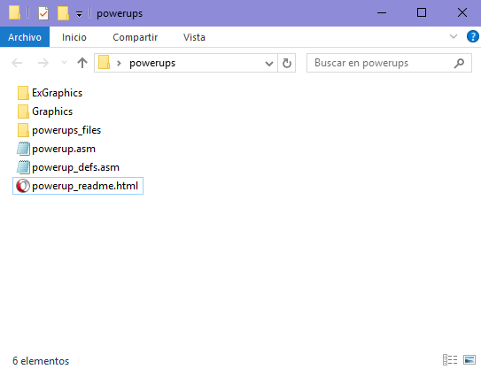
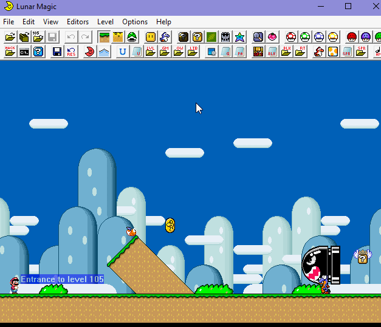
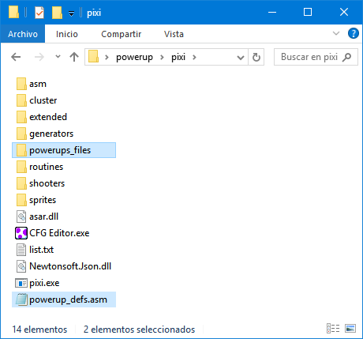
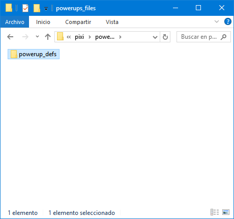
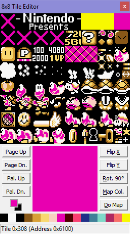

Patching & Basic tweaking
- How do I insert this patch?
- How do I insert this patch on a SA-1 ROM?
- Customizing the patch
Getting this patch inserted is a really easy task, let's see a quick guide:
1) Download the latest release on GitHub.

Click the zip file and it should start downloading. I know you might already have the file, but it doesn't hurt having this step. Also extract the zip's contents in a folder

2) Download the following tools and patches.
3) Open your ROM in Lunar Magic, enable FastROM patch, change compression options and expand ROM to 3MB+.

4) Go to powerups_files/powerup_defs/ and edit anything you want from these files.
5)Search !i_read_the_readme define in powerups_defs.asm and set it to 1.
6) Use AddMusicK for the first time in your ROM.
AddMusicK is required for some checks, weird sound effects may occur if you don't do this before applying this patch.
7) Open asar.exe and insert powerup.asm
8) Copy "powerup_defs.asm" and paste it in your PIXI folder.
9) Create a folder named powerups_files in your PIXI folder.
10) Copy the powerup_defs folder and paste it inside of the powerups_files folder you created in your PIXI folder
Your PIXI folder should looks like this:


11) Insert the included sprites with PIXI
12) Copy the highlighted files to your GPS folder
13) Insert the included blocks with GPS
BIG NOTE:
If you modify ANYTHING in powerups_files/powerup_defs/ folder, be sure that you reflect the changes in the PIXI and GPS folders! You have been warned.
Back to top
Getting this patch inserted is a really easy task, let's see a quick guide:
1) Download the latest release on GitHub.
Click the zip file and it should start downloading. I know you might already have the file, but it doesn't hurt having this step. Also extract the zip's contents in a folder
2) Download the following tools.
3) Get a clean SA-1 ROM.
4) Go to powerups_files/powerup_defs/ and edit anything you want from these files.
5)Search !i_read_the_readme define in powerups_defs.asm and set it to 1.
6) Use AddMusicK for the first time in your ROM.
AddMusicK is required for some checks, weird sound effects may occur if you don't do this before applying this patch.
7) Open asar.exe and insert powerup.asm
8) Copy "powerup_defs.asm" and paste it in your PIXI folder.
9) Create a folder named powerups_files in your PIXI folder.
10) Copy the powerup_defs folder and paste it inside of the powerups_files folder you created in your PIXI folder
Your PIXI folder should looks like this:
11) Insert the included sprites with PIXI
12) Copy the highlighted files to your GPS folder
13) Insert the included blocks with GPS
BIG NOTE:
If you modify ANYTHING in powerups_files/powerup_defs/ folder, be sure that you reflect the changes in the PIXI and GPS folders! You have been warned.
Back to top
This whole section is dedicated to the settings inside powerup_defs.asm file.
!enable_projectile_dma
This feature is for these powerups that shoots projectiles at enemies. It uploads the graphics of the projectile to VRAM to the highlighted spots in the image.
Setting this feature to 0 means that it's up to you to relocate the projectile GFX to some space that isn't used.

!projectile_dma_tile
Which tiles are going to be used for the Projectile DMA feature. Top left corner.
!dynamic_items
Having a lot of powerups also means that you need a lot of powerup items! This is why this feature was created. You can have up to 64 different powerup items.
It uses DMA to transfer the powerup item graphic to the yellow spots in the following image, the pink one is used for the item box.

The limits of this feature are that you can't use ExAnimation on the powerup items and only TWO powerups can be on screen at the same time.

!starting_slot
It refers to the first sprite slot used by the custom sprites. It should match the values used in the provided sprites.txt file.
If they don't match, Bad Things will happen to your ROM. You have been warned.
!clear_7E2000
Clears the uncompressed Mario graphics that are stored on RAM. If you're using the Mode 7 Game Over Patch you may want to set to zero this.
!better_powerdown
Enable if using it, it will disable some code used to clear RAM when hit. That's handled by the Better Powerdown patch from MarioFanGamer.
SP1 & SP2 remap options
In this section everything is explained with comments. Knowledge about sprite tiles and YXPPCCCT is required here. Search an adequate tutorial about these.
Other defines
There are some stuff related to the item box, everything is commented for easier understanding. Should be very straight forward.
Back to top
Return to the main page